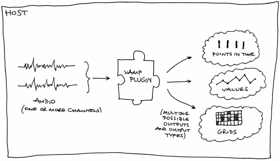

The Vamp audio analysis plugin system
Vamp is an audio processing plugin system for
plugins that extract descriptive information from audio data
— typically referred to as audio analysis plugins
or audio feature extraction plugins.

Get some plugins!
Do something with them!
- Interactive audio analysis using Vamp plugins? Try Sonic Visualiser!
- Analysis inside your audio editor? Audacity 2 can use Vamp plugins to create label tracks from analysis results.
- Want to extract features from lots of audio files, writing results into text files or as RDF for linked data purposes? You need Sonic Annotator!
- For simple command-line purposes, there is also a Vamp host included in the developer SDK.
- ... other hosts you'd like to see mentioned here? Tell us!
Developers and DSP researchers!
Just like an audio effects plugin (such as a VST), a Vamp
plugin is a binary module that can be loaded up by a host
application and fed audio data. However, unlike an effects
plugin, a Vamp plugin generates not more audio, but some sort of
symbolic information. Typical things that a Vamp plugin might
calculate include the locations of moments such as note onset
times, visualisable representations of the audio such as
spectrograms, or curve data such as power or fundamental
frequency. Read more about the
rationale for Vamp.
 |
Developed at the Centre for Digital Music, Queen Mary, University of London. |
Partially funded by the EPSRC through the OMRAS2 project EP/E017614/1. |
 |
|
Partially funded by the European Commission through the SIMAC project IST-FP6-507142. |
Partially funded by the European Commission through the EASAIER project IST-FP6-033902. |
|